Coanalitici sono unione di omega1 boreliani
Esercizio 4
Prove the following theorem:
Let
be a Polish space. Then every 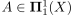 can be written as 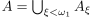, where 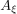 is Borel for every
.
by completing the details of the following steps:
- First prove the theorem for 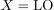 and 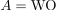 as follows:
- Given
 , let
, let  be the set of codes for well-orders of
be the set of codes for well-orders of  with order type 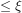. Show that each is analytic.
with order type 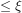. Show that each is analytic. Argue that there is a Borel set such that 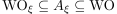.
Optional: Show that
itself is Borel by showing that its complement is analytic as well.
- Conclude that .
- Given
- Use the fact that 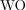 is
 -complete to prove the theorem for
-complete to prove the theorem for  and an arbitrary 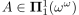.
and an arbitrary 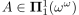. - Use the Borel isomorphism theorem for Polish spaces to transfer the result to an arbitrary uncountable Polish space .
- What happens if is a countable Polish space?
Soluzione
Parte a.
Si consideri lo spazio polacco 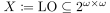 e si adotti la notazione dell’Esempio 3.1.8: l’insieme 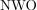 è analitico, mentre l’insieme è coanalitico. È dunque possibile porre
Sia 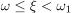 fissato. Sia 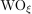 l’insieme di tutti gli elementi di con order type
 : un buon ordine 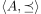 ha order type 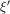 se e solo se esiste una biiezione 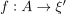 tale che, per ogni
: un buon ordine 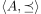 ha order type 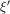 se e solo se esiste una biiezione 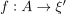 tale che, per ogni  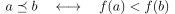
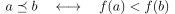Dunque 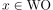 ha order type se e solo se esiste una funzione biiettiva 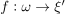 tale che per ogni 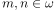:
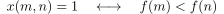Si consideri quindi 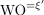 l’insieme di tutti gli elementi di con order type esattamente : per ogni :
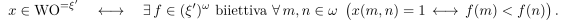Inoltre, se 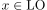, la condizione di destra garantisce che , poiché la biiezione
 è un isomorfismo di ordini e è ben ordinato (in quanto ordinale). Pertanto, per ogni :
è un isomorfismo di ordini e è ben ordinato (in quanto ordinale). Pertanto, per ogni :
Osservazione 1: per ogni 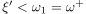, si ha che 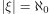, e pertanto è numerabile.
Osservazione 2: per ogni 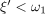, è uno spazio polacco; infatti ogni ordinale numerabile è omeomorfo ad un sottoinsieme chiuso e numerabile di
 e pertanto è polacco. Quindi 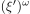 è ancora uno spazio polacco.
e pertanto è polacco. Quindi 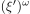 è ancora uno spazio polacco.
Si definisce quindi:
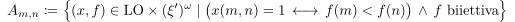Questo è un insieme 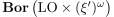, poiché tutte le condizioni sono Boreliane:
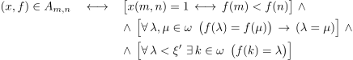Le quantificazioni sono tutte numerabili in virtù dell’Osservazione 1.
Pertanto
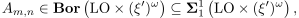e dunque anche 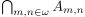 è 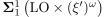.
Definita
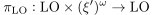la proiezione sul primo fattore, allora
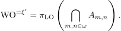Dunque applicando la Proposizione 3.1.5 (per l’osservazione precedente è Polacco) si ottiene che è 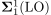.
Inoltre,
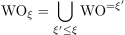e pertanto questo dimostra che 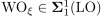, poiché
 è chiuso per unioni numerabili (per la Proposizione 3.1.5).
è chiuso per unioni numerabili (per la Proposizione 3.1.5).
Sia fissato. È possibile applicare il Teorema 3.2.1 a e (infatti sono entrambi analitici e 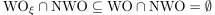): esiste
 Boreliano tale che:
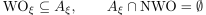
Boreliano tale che:
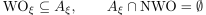Siccome 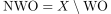 si ha che 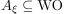:
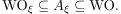Per ogni 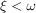 si pone 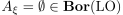.
Vale la seguente uguaglianza: . (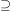): è ovvio, poiché per ogni si ha 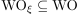. (
 ): ciascun buon ordine lineare ha order type minore di 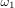, e pertanto se allora esiste tale che .
): ciascun buon ordine lineare ha order type minore di 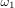, e pertanto se allora esiste tale che .
Pertanto si ha che
ed inoltre, per ogni , e dunque
Per doppia inclusione si ha proprio .
Parte b.
Sia e .
Siccome è -completo, allora esiste una funzione continua
tale che .
Per il punto precedente è possibile scrivere con , e quindi
Posto  , si ha che poiché e continua. Pertanto
, si ha che poiché e continua. Pertanto
con boreliani.
Parte c.
Sia uno spazio polacco non numerabile, e sia . Per il Teorema 3.2.9 esiste un isomorfismo Boreliano:
In particolare per il Corollario 3.1.16, poiché  è Boreliana. Per il punto precedente,
è Boreliana. Per il punto precedente,
con
Siccome è una biiezione, allora :
Posto ora , questi sono Boreliani per il Corollario 3.2.7, poiché Boreliana iniettiva e Boreliano.
Parte d.
Se è numerabile allora il teorema è banale: ogni sottoinsieme di è unione numerabile di singoletti, che sono chiusi, e pertanto ogni sottoinsieme di è un Boreliano.